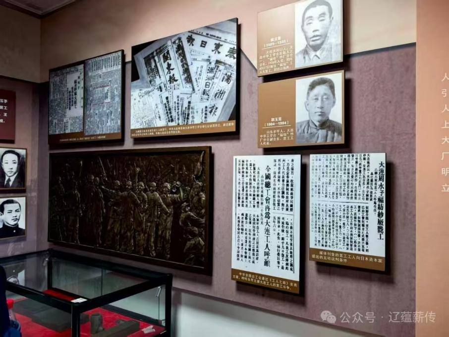

大连中华工学会旧址，是大连市爱国主义教育基地，省级重点文物保护单位，于1963年被辽宁省人民政府公布为第一批省级文物保护单位；1994年被中共大连市委、市政府命名为爱国主义教育基地；2021年，被辽宁省文物局公布为第一批不可移动革命文物；2022年被辽宁省委宣传部、省总工会命名为首批职工思想政治教育基地。
由于历史原因，原先这里一直只有旧址而没有陈列展览。2002年10月，被辽宁省委命名为党史教育基地。为充分发挥教育作用，有关部门组织专业人员进行文物征集和陈列布展工作，同时还对旧址做了必要的修缮。2003年5月，正式开馆。新的布展遵循真实再现历史、真实表现人物的原则，突出了时代特点。
在近200余平方米的展览面积中，复原了当年中华工学会办公室、1924年邓中夏来工学会居住和工作的房间等，并另设两间陈列室，重点反映中华工学会的活动和党领导下的福纺“4·27”大罢工等历史事件。为丰富展览内容，还组织拍摄历史文献纪录片《薪火耀关东》，通过真实的影像资料，全面展示了大连中华工学会的历史及其特殊的历史地位。
该旧址原为1923年成立的“沙河口工场华人工学会”（后更名为大连中华工学会），由傅景阳任会长，是东北地区首个中国人工会组织。1924年改组后，在中国共产党的领导下开展工人运动。1924年4月27日，组织了著名的“福纺大罢工”，对东北及全国工人运动产生重大影响。
 ← 返回大连地图